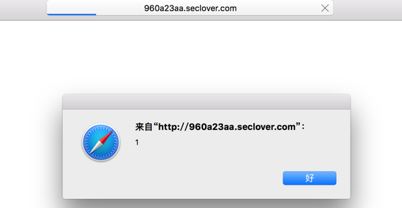

2016-03-02 16:20
I like Evil
前言
由于带着对Web安全对兴趣，前几天和网友们一起参加SSCTF玩, 显然我负责Web。 初步看了一下题，第一题得考上传，第二道是XSS:题目链接，第三道是SQLinject. XSS居然过滤那么多标签和关键字，SQLinject发现DB是NoSQL中的mongodb. 然后从来没参加这种比赛的我蒙蔽了,当时大概是这样的：
好吧，我不会。 然后我转去解Crypto的题的时候，这时候队友给了我一个链接：
卧槽，如获至宝呀！涨知识了。
1.模版注入
先快速浏览了一下这篇文章，发现题目中和这个没啥区别，就是多过滤了点关键字呗，比如on替换成空了，试了一下oonn,哈哈,Get It！
然后简单构造:
{{'a'.coonnstructor.prototype.charAt=[].join; $evevalal('x=alalertert(1)');}}
于是成功了：

当然，我是来学习的，怎么能止步不前呢，于是我继续Google这方面的资料，发现这方面的东西真多：
- 比如这篇文章：
其PDF可以在这里发现:Kettle-Server-Side-Template-Injection-RCE-For-The-Modern-Web-App-wp.pdf
以上满满地都是干货。
2.Python的decode/encode
这是这次比赛获得到的第二个技能点
比赛结束之时，队友在群里问：
Happy(***) 14:37:52
//three encryption
code="K0FDTUFRQUIrQUY0QVJBQkJBRUVBUVFCQkFFRUFQUUE5QUZZQWZ3QllBR0FBVXdBckFEZ0FiUUFoQUhNQVl3QXBBR2NBWndCUkFFRUFRUUJCQUQwQVBRQmVBQ01BZmdCQS0=" 第一次看出是base64，之后还有两次看不出来了
求大牛help
老虎<***> 14:48:29
你什么都试试呗
<***> 14:50:03
base64-->utf7-->vbscript.encode
然后关于UTF7我也恰好是看了的，只是最后一部不知道（^_^现在知道了）
我之所以提到Python的内置函数我才发现encode和decode是如此的牛逼：
In [1]: code="K0FDTUFRQUIrQUY0QVJBQkJBRUVBUVFCQkFFRUFQUUE5QUZZQWZ3QllBR0FBVXdBckFEZ0FiUUFoQUhNQVl3QXBBR2NBWndCUkFFRUFRUUJCQUQwQVBRQmVBQ01BZmdCQS0=" In [2]: code.decode('base64').decode('utf7') Out[2]: u'#@~^DAAAAA==V\x7fX`S+8m!sc)ggQAAA==^#~@'
枉费我用了那么久的的encode/decode,但是从来没想到可以直接decode/encode比如向base64 /zip这样的编码方式！简直跪了！！！
这里去=>了解更多
之前的我只认为编码方式是什么utf7,8,16呀。gbk之类的可以，没想到。。。base64/zip也支持！
对了，至于说怎么知道是utf7的话，可以参见UTF7的wikipedia,从算法来看，如果一个字符串是中间有什么+或者-的话，可能性就有点高，可以试试用该编码方式哦。
3.看文档！！！
无论是上面模版注入中的文档和Python官网提到的内容来看，都表示了要熟悉和了解这些漏洞和用法，必须仔细看文档。
这让我想到了这篇文章： php-date-is-xssable/
文中多次提到
According to the documentation
爱读文档的孩子真的会有收获的～（虽然脑洞得大）
这段代码我觉得非常棒～
<?php echo date(‘<\i\m\g \s\r\c=x \o\n\e\r\r\o\r=\a\l\e\r\t(\’X\S\S\’)\>’);
说到这里，我吐槽一下前几天写PHP遇见的一个bug，我判断一个整数的时候用的代码如下：
<?php filter_var($input, FILTER_VALIDATE_INT) !==false ;
这个函数在32bit和64bit上效果是不一样的，PHP_INT_MAX范围不一样，整数范围就不同了。官方文旦没有这点，我找了半天才反应过来是这方面的问题～～～
哦，对了，天真的我在该函数中加入官方文档中提到的第三个可选参数$options以为可以扩大检查范围，实现32bit和64bit机器的一致性。
比如这样的 ：
<?php filter_var($input, FILTER_VALIDATE_INT, array('option'＝>array('max_range'=>PHP_INT_MAX+2)))) !==false ;
结果可想而知，这个max_range会被强制转为int,所以溢出了～～
2333333
全文结束，感谢阅读。